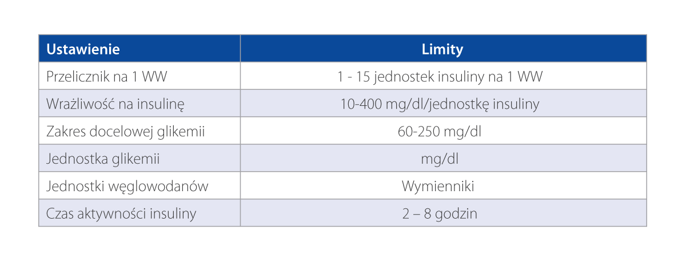

Kalkulator Bolusa, zaproponuje dawkę insuliny na posiłek i korektę na podstawie następujących parametrów:
1. Ustawienia osobiste: przelicznik
węglowodanów i wrażliwość na insulinę
2. Aktywna insulina
3. Wartość stężenia glukozy we krwi
4. Wymienniki WW
Poniższa tabela zawiera informacje, jakie limity można ustawić w pompie i jakie są ustawienia fabryczne.
Ważne jest, aby poniższe parametry, dla konkretnego użytkownika, zawsze były ustalone z lekarzem
prowadzącym.
